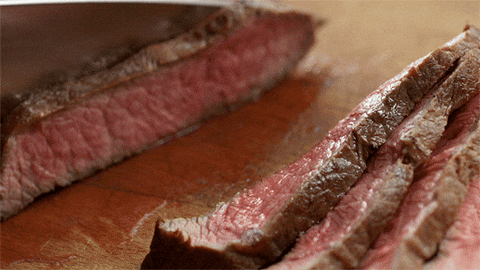

Picanha is one of the most flavorful cuts of beef, prized for its rich marbling and thick fat cap that bastes the meat as it cooks. Grilling is one of the best ways to prepare this cut, allowing the fat to render slowly while creating a beautifully charred exterior and a juicy, tender interior. A simple seasoning of coarse salt and freshly cracked black pepper lets the natural beef flavor take center stage, making this a classic Brazilian-style preparation.
Whether you're cooking for a backyard barbecue or a special family dinner, grilled picanha is an impressive centerpiece that's surprisingly easy to make. Cook it over two-zone heat, starting with indirect heat to gently bring the meat to temperature before finishing over direct heat for a crisp, caramelized crust. After a short rest, slice the picanha against the grain and serve it with grilled vegetables, roasted potatoes, rice, or chimichurri for a memorable meal.